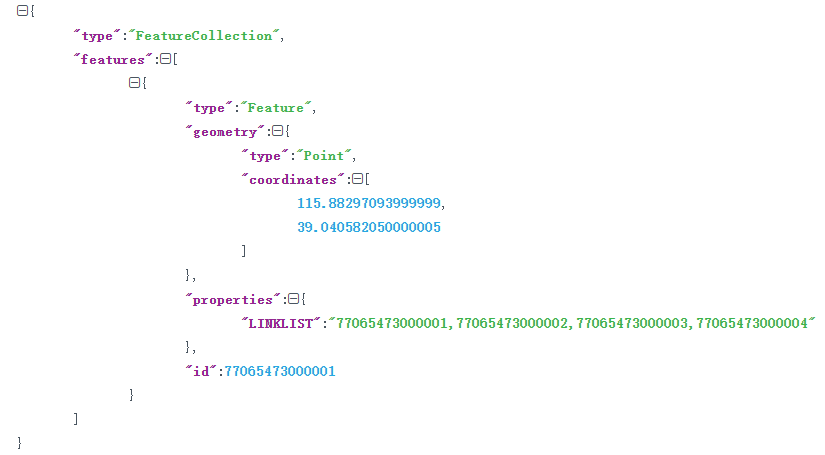
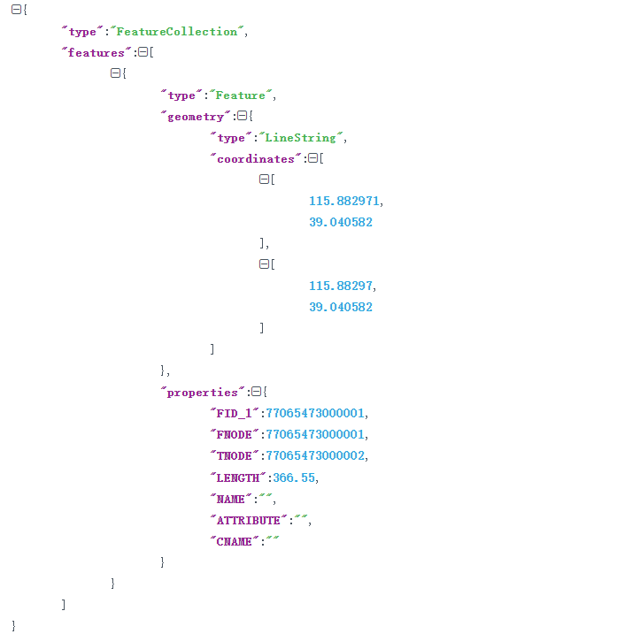

城市体征构建与认知系统
数据介绍
上游任务输入
- 路网数据：包含节点数据和边数据。
- 节点数据：包含节点序号、节点坐标和节点属性，格式为： 
- 边数据：包含边序号，边长度，起始节点，终止节点，经过节点坐标和边属性，格式为： 
- 车辆轨迹数据：将轨迹经纬度映射到路网上，得到节点序列，如[1, 2, 3]表示车辆从节点1经过节点2到达节点3。
- POI数据：包含经纬度和POI种类。
上游任务输出
- 路段到结构区的分配矩阵：包含每条路段属于每个结构区的概率值。
- 结构区到功能区的分配矩阵：包含每个结构区属于每个功能区的概率值。
下游任务输入
- 路段到结构区的分配矩阵：包含每条路段属于每个结构区的概率值。
- 结构区到功能区的分配矩阵：包含每个结构区属于每个功能区的概率值。
- 路网流量历史数据：包含过去时间段内路网上各个路段的历史流量。
下游任务输出
- 路网流量预测输出：包含未来时间段内路网上各个路段的预测流量。